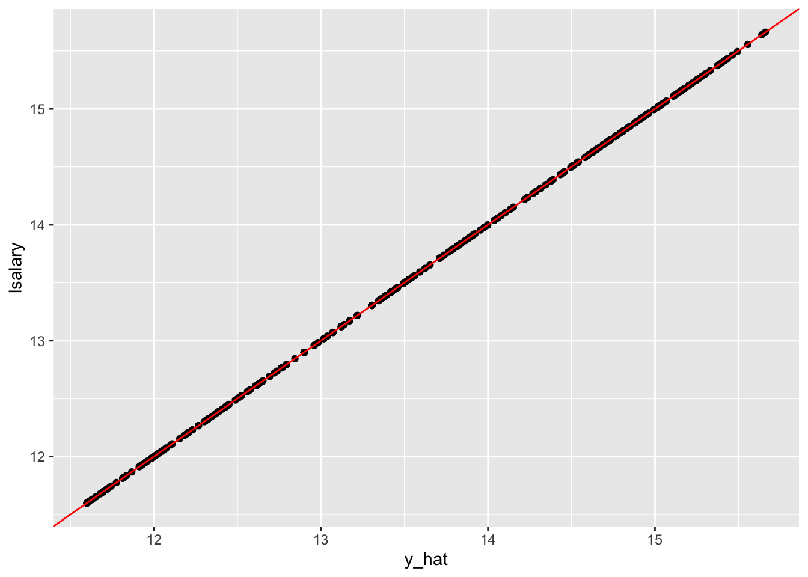

library(tidyverse)
library(data.table)
library(rpart)
library(rattle)
library(wooldridge)6 Random Forest
6.1 Regression tree
Packages to load for replication
6.1.1 What is it?
Here is an example of regression tree to explain logged salary (lsalary) using the mlb1 data from the wooldridge package.
Code
#=== get mlb1 data (from wooldridge) ===#
data(mlb1)
#=== build a simple tree ===#
simple_tree <-
rpart(
lsalary ~ hits + runsyr,
data = mlb1,
control = rpart.control(minsplit = 200)
)
fancyRpartPlot(simple_tree)
Here is how you read the figure. At the first node, all the observations belong to it (\(n=353\)) and the estimate of lsalary is 13. Now, the whole datasets are split into two based on the criteria of whether hits is less than 262 or not. If yes, then such observations will be grouped into the node with “2” on top (the leftmost node), and the estimated lsalary for all the observations in that group (\(n = 132\)) is 12. If no, then such observations will be grouped into the node with “3” on top, and the estimated lsalary for all the observations in that group (\(n = 221\)) is 14. This node is further split into two groups based on whether runsyr is less than 44 or not. For those observations with runsyr \(< 44\) (second node a the bottom), estimated lsalary is 14. For those with runsyr \(>= 44\) (rightmost node at the bottom), estimated lsalary is 15. The nodes that do not have any further bifurcations below are called terminal nodes or leafs.
As illustrated in the figure above, a regression tree splits the data into groups based on the value of explanatory variables, and all the observations in the same group will be assigned the same estimate (the sample average of the dependent variable of the group).
Another way of illustrating this grouping is shown below:
Code
ggplot(mlb1) +
geom_point(aes(y = hits, x = runsyr, color = lsalary)) +
scale_color_viridis_c() +
geom_hline(yintercept = 262) +
geom_line(
data = data.table(x = 44, y = seq(262, max(mlb1$hits), length = 100)),
aes(y = y, x = x)
) +
annotate(
"text",
x = 44, y = 111,
label = "Region 2",
color = "red"
) +
annotate(
"text",
x = 22, y = 1500,
label = "Region 6",
color = "red"
) +
annotate(
"text",
x = 75, y = 1500,
label = "Region 7",
color = "red"
)
The mechanism called recursive binary splitting is used to split the predictor space like the example above. Suppose you have K explanatory variables (\(X_1, \dots, X_k\)). Further, let \(c\) denote the cutpoint that splits the sample into two regions: {\(X|X_k < c\)} and {\(X|X_k \geq c\)}.
{\(X|X_k < c\)} means observations that satisfy the condition stated right to the vertical bar (|). Here, it means all the observations for which its \(X_k\) value is less than \(c\).
- Step 1: For each of the explanatory variables (\(X_1\) through \(X_K\)), find the cutpoint that leads to the lowest sum of the squared residuals.
- Step 2: Among all the splits (as many as the number of explanatory variables), pick the variable-cutpoint combination that leads to the lowest sum of the squared residuals.
The data is then split according to the chosen criteria and then the same process is repeated for each of the branches, ad infinitum until the user-specified stopping criteria is met.
Let’s try to write (an inefficient version) this process for the first split from the beginning node using the mlb1 data as an illustration based on a simple grid search to find the optimal cutpoints (Step 1).
#=== get data ===#
library(wooldridge)
data(mlb1)
mlb1_dt <-
mlb1 %>%
data.table() %>% # turn into data.table
.[, salary := NULL] %>% # remove salary (use lsalary instead)
na.omit() # remove observations with NA in any of the variablesLet’s work on splitting based on hruns. First, we define a sequence of values of cutpoints for hruns.
value_seq <-
quantile(
mlb1_dt$hruns,
prob = seq(0.001, 0.999, length = 100)
) %>%
unique()For each value in value_seq, we find the RSS. For example, for the 50th value in value_seq,
copy(mlb1_dt) %>%
#=== find the mean of lsalary by whether hruns is less than the cutpoint or not ===#
.[, y_hat := mean(lsalary), by = (hruns < value_seq[50])] %>%
#=== get squared residuals ===#
.[, (lsalary - y_hat)^2] %>%
#=== get RSS ===#
sum()[1] 318.2431How about 70th value in value_seq?
copy(mlb1_dt) %>%
#=== find the mean of lsalary by whether hruns is less than the cutpoint or not ===#
.[, y_hat := mean(lsalary), by = (hruns < value_seq[70])] %>%
#=== get squared residuals ===#
.[, (lsalary - y_hat)^2] %>%
#=== get RSS ===#
sum()[1] 419.1821This means value_seq[70] (209.0880707) is a better cutpoint than value_seq[50] (71.7563535).
Okay, let’s consider all the candidate values, not just 50th and 70th, and then pick the best.
get_rss <- function(i, var_name, value_seq, data)
{
rss <-
copy(data) %>%
setnames(var_name, "var") %>%
.[, y_hat := mean(lsalary), by = (var < value_seq[i])] %>%
.[, (lsalary - y_hat)^2] %>%
sum()
return_data <-
data.table(
rss = rss,
var_name = var_name,
var_value = value_seq[i]
)
return(return_data)
}Here are RSS values at every value in value_seq.
rss_value <-
lapply(
seq_len(length(value_seq)),
function(x) get_rss(x, "hruns", value_seq, mlb1_dt)
) %>%
rbindlist()
head(rss_value) rss var_name var_value
1: 445.0615 hruns 0
2: 396.8287 hruns 1
3: 383.2393 hruns 2
4: 362.5779 hruns 3
5: 337.0760 hruns 4
6: 325.4865 hruns 5tail(rss_value) rss var_name var_value
1: 419.1821 hruns 209.0881
2: 419.5111 hruns 231.0000
3: 428.4163 hruns 242.4425
4: 434.3318 hruns 258.5674
5: 441.9307 hruns 333.4414
6: 443.3740 hruns 426.0780Finding the cutpoint value that minimizes RSS,
rss_value[which.min(rss), ] rss var_name var_value
1: 260.3094 hruns 28.47488Okay, so, the best cutpoint for hruns is 28.475
Suppose we are considering only five explanatory variables in building a regression tree: hruns, years, rbisyr, allstar, runsyr, hits, and bavg. We do the same operation we did for hruns for all the variables.
get_rss_by_var <- function(var_name, data)
{
temp_data <- copy(data)
#=== define a sequence of values of hruns ===#
value_seq <-
quantile(
temp_data[, ..var_name] %>% unlist(),
prob = seq(0.001, 0.999, length = 100)
) %>%
unique()
#=== get RSS ===#
rss_value <-
lapply(
seq_len(length(value_seq)),
function(x) get_rss(x, var_name, value_seq, temp_data)
) %>%
rbindlist() %>%
.[which.min(rss),]
return(rss_value)
}Looping over the set of variables,
(
min_rss_by_var <-
lapply(
c("hruns", "years", "rbisyr", "allstar", "runsyr", "hits", "bavg"),
function(x) get_rss_by_var(x, mlb1_dt)
) %>%
rbindlist()
) rss var_name var_value
1: 260.3094 hruns 28.474879
2: 249.9090 years 4.000000
3: 265.1082 rbisyr 32.774949
4: 279.7165 allstar 8.209356
5: 251.6343 runsyr 38.079145
6: 205.1488 hits 354.811444
7: 375.0281 bavg 252.359257So, the variable-cutpoint combination that minimizes RSS is hits - 354.81. We now have the first split. This tree is developed further by splitting nodes like this.
6.1.2 Training a regression tree in R
You can fit a regression tree using rpart() from the rpart package. Its syntax is similar to that of lm() for a quick fitting.
rpart(
formula,
data
)Using mlb1, let’s fit a regression tree where lsalary is the dependent variable and hruns, years, rbisyr, allstar, runsyr, hits, and bavg are the explanatory variables.
#=== fit a tree ===#
fitted_tree <-
rpart(
lsalary ~ hruns + years + rbisyr + allstar + runsyr + hits + bavg,
data = mlb1_dt
)Here is the visualization of the fitted tree using fancyRpartPlot() from the rattle package.
fancyRpartPlot(fitted_tree)Now, you may wonder why rpart() is not building a tree that has as many leaves as the number of observations so that we have a perfect prediction for the train data (mlb1). If we are simply implementing recursive binary splitting, then it should not have stopped where it stopped. This is because rpart() sets parameter values that control the development of a tree by default. Those default parameters can be seen below:
rpart.control()$minsplit
[1] 20
$minbucket
[1] 7
$cp
[1] 0.01
$maxcompete
[1] 4
$maxsurrogate
[1] 5
$usesurrogate
[1] 2
$surrogatestyle
[1] 0
$maxdepth
[1] 30
$xval
[1] 10For example, minsplit is the minimum number of observations that must exist in a node in order for a split to be attempted. cp refers to the complexity parameter. For a given value of cp, a tree is build to minimize the following:
\[ \sum_{t=1}^T\sum_{x_i\in R_t} (y_i - \hat{y}_{R_t})^2 + cp\cdot T \]
where \(R_t\) is the \(t\)th region and \(\hat{y_{R_t}}\) is the estimate of \(y\) for all the observations that reside in \(R_t\). So, the first term is RSS. The objective function has a penalization term (the second term) just like shrinkage methods we saw in Section 4.1. A higher value of cp leads to a less complex tree with less leaves.
If you want to build a much deeper tree that has many leaves, then you can do so using the control option like below.
full_tree <-
rpart(
lsalary ~ hruns + years + rbisyr + allstar + runsyr + hits + bavg, # formula
data = mlb1_dt, # data
control = # control of the hyper parameters
rpart.control(
minsplit = 2,
cp = 0 # complexity parameter
)
)Let’s see how amazing this tree is by comparing the observed and fitted lsalary values.
#=== get fitted values ===#
mlb1_dt[, y_hat := predict(full_tree, newdata = mlb1_dt)]
#=== visualize the fit ===#
ggplot(data = mlb1_dt) +
geom_point(aes(y = lsalary, x = y_hat)) +
geom_abline(slope = 1, color = "red")
Yes, perfect prediction accuracy! At least for the train data anyway. But, we all know we want nothing to do with this kind of model. It is clearly over-fitting the train data.
In order to find a reasonable model, we can use KCV over cp. Fortunately, when we run rpart(), it automatically builds multiple trees at different values of cp that controls the number of leaves and conduct KCV. You can visualize this using plotcp().
plotcp(fitted_tree)
MSE and cp are presented on the y- and x-axis, respectively. According to the KCV results, cp \(= 0.018\) provides the tree with the smallest number of leaves (the most simple) where the MSE value is within one standard deviation from the lowest MSE. You can access the tree built under cp \(= 0.018\) like below.
#=== get the best tree ===#
best_tree <- prune(full_tree, cp = 0.018)
#=== visualize it ===#
fancyRpartPlot(best_tree)
Even though how a regression tree is build in R. In practice, you never use a regression tree itself as the final model for your research as its performance is rather poor and tend to over-fit compared to other competitive methods. But, understanding how building a regression tree is important to understand its derivatives like random forest, boosted regression forest.
6.2 Random Forest (RF)
Regression tree approach is often not robust and suffers from high variance. Here, we look at the process called bagging and how it can be used to train RF model, which is much more robust than a regression tree.
6.2.1 Bagging (Bootstrap aggregation)
Consider two random variables \(x_1\) and \(x_2\) from the identical distribution, where \(E[x_i] = \alpha\) and \(Var(x_i) = \sigma^2\). You are interested in estimating \(E[x_i]\). We all know that the following relationship holds in general:
\[ \begin{aligned} Var(\frac{x_1 + x_2}{2}) & = \frac{Var(x_1)}{4} + \frac{Var(x_2)}{4} + \frac{Cov(x_1, x_2)}{2} \\ & = \frac{\sigma^2}{2} + \frac{Cov(x_1, x_2)}{2} \end{aligned} \]
So, instead of using a single draw from \(x_1\) and using it as an estimate for \(E[x_i]\), it is better to use the values from both \(x_1\) and \(x_2\) and average them to obtain an estimate for \(E[x_i]\) as long as \(x_1\) and \(x_2\) are not perfectly positively correlated (in this case \(Cov(x_1, x_2) = Var(x_1) = Var(x_1) = \sigma^2\)). The benefit of averaging is greater when the value of \(Cov(x_1, x_2)\) is smaller.
Let’s do a little experiment to see this. We consider three cases:
#=== set the number of observations to 1000 ===#
N <- 1000#=== first case (no correlation) ===#
x_1 <- rnorm(N)
x_2 <- rnorm(N)
cor(x_1, x_2)[1] 0.01905053#=== second case (positively correlated) ===#
x_1 <- rnorm(N)
x_2 <- 0.5 * x_1 + sqrt(1-(0.5)^2) * rnorm(N)
cor(x_1, x_2)[1] 0.4895056#=== third case (negatively correlated) ===#
x_1 <- rnorm(N)
x_2 <- - 0.8 * x_1 - sqrt(1-(0.8)^2) * rnorm(N)
cor(x_1, x_2)[1] -0.8194587get_alpha <- function(i)
{
#=== base case ===#
alpha_hat_0 <- rnorm(1)
#=== first case (no correlation) ===#
x_1 <- rnorm(1)
x_2 <- rnorm(1)
alpha_hat_1 <- (x_1 + x_2) / 2
#=== second case (positively correlated) ===#
x_1 <- rnorm(1)
x_2 <- 0.5 * x_1 + sqrt(1-(0.5)^2) * rnorm(1)
alpha_hat_2 <- (x_1 + x_2) / 2
#=== third case (negatively correlated) ===#
x_1 <- rnorm(1)
x_2 <- - 0.8 * x_1 - sqrt(1-(0.8)^2) * rnorm(1)
alpha_hat_3 <- (x_1 + x_2) / 2
return_data <-
data.table(
alpha_hat_0 = alpha_hat_0,
alpha_hat_1 = alpha_hat_1,
alpha_hat_2 = alpha_hat_2,
alpha_hat_3 = alpha_hat_3
)
return(return_data)
} set.seed(234934)
sim_results <-
lapply(
1:1000,
get_alpha
) %>%
rbindlist() %>%
melt()Warning in melt.data.table(.): id.vars and measure.vars are internally
guessed when both are 'NULL'. All non-numeric/integer/logical type columns are
considered id.vars, which in this case are columns []. Consider providing at
least one of 'id' or 'measure' vars in future.As you can see below, they are all pretty much unbiased. However, all the cases that averaged two values (cases 1, 2, and 3) outperformed the base case that relied on a single value each iteration. You can see that when the random variables are negatively correlated, the power of averaging is greater compared to when they are independent or positively correlated. The independent case (case 1) is better than the positive correlation case (case 2).
#=== expected value ===#
sim_results[, mean(value), by = variable] variable V1
1: alpha_hat_0 0.037836191
2: alpha_hat_1 0.008031971
3: alpha_hat_2 0.008486035
4: alpha_hat_3 0.004259832#=== standard error ===#
sim_results[, sd(value), by = variable] variable V1
1: alpha_hat_0 0.9840232
2: alpha_hat_1 0.6969730
3: alpha_hat_2 0.8660699
4: alpha_hat_3 0.3103408Bagging takes advantage of the power of averaging. Specifically, bagging takes the following steps:
- Generate many bootstrapped datasets (say \(B\) datasets)
- Train a model on each of the bootstrapped datasets (\(\hat{f}^1, \dots, \hat{f}^B\))
- Average the estimates from all the trained models to come up with an estimate
\[ \hat{f}(X) = \frac{\hat{f}^1(X) + \dots + \hat{f}^B(X)}{B} \]
Let’s implement this for \(B = 10\) using mlb1_dt. First, define a function (named train_a_tree()) that bootstrap data, fit a regression tree, and then return the fitted values.
train_a_tree <- function(i, data)
{
#=== number of observations ===#
N <- nrow(data)
#=== bootstrapped data ===#
boot_data <- data[sample(1:N, N, replace = TRUE), ]
#=== train a regression tree ===#
rpart <-
rpart(
lsalary ~ hruns + years + rbisyr + allstar + runsyr + hits + bavg,
data = boot_data
)
#=== predict ===#
return_data <-
copy(data) %>%
.[, y_hat := predict(rpart, newdata = data)] %>%
.[, .(id, y_hat)]
return(return_data)
}We now repeat train_a_tree() 10 times.
#=== create observation id for later group-by averaging ===#
mlb1_dt[, id := 1:.N]
(
y_estimates <-
lapply(
1:10,
function(x) train_a_tree(x, mlb1_dt)
) %>%
rbindlist()
) id y_hat
1: 1 15.15792
2: 2 14.23816
3: 3 15.15792
4: 4 14.23816
5: 5 14.23816
---
3296: 326 13.17676
3297: 327 12.64863
3298: 328 12.64863
3299: 329 13.61157
3300: 330 12.02302By averaging \(y\) estimates by id, we can get bagging estimates.
y_estimates[, mean(y_hat), by = id] id V1
1: 1 15.09137
2: 2 14.66143
3: 3 14.61425
4: 4 14.31035
5: 5 13.74852
---
326: 326 13.04455
327: 327 12.79717
328: 328 12.79717
329: 329 13.67179
330: 330 12.02051Now, let’s take a look at the individual estimates of \(y\) for the first observation.
y_estimates[id == 1, ] id y_hat
1: 1 15.15792
2: 1 15.04446
3: 1 15.21238
4: 1 15.07311
5: 1 14.92840
6: 1 14.98571
7: 1 15.12060
8: 1 15.14064
9: 1 15.05676
10: 1 15.19375Hmm, the estimates look very similar. Actually, that is the case for all the observations. This is because the trained trees are very similar for many reasons, and the trees are highly “positively” correlated with each other. From our very simple experiment above, we know that the power of bagging is not very high when that is the case. While RF does use bagging, popular R and python packages does it in a much better way than I demonstrated here. We see this next.
6.2.2 Random Forest (RF)
Unlike a naive bagging approach demonstrated above, RF does it in a clever way to decorrelate trees. Specifically, for any leave of any tree, they consider only a randomly select subset of the explanatory variables when deciding how to split a leave. A typical choice of the number of variables considered at each split is \(\sqrt{K}\), where \(K\) is the number of the explanatory variables specified by the user. In the naive example above, all \(K\) variables are considered for all the split decisions of all the trees. Some variables are more influential than others and they get to be picked as the splitting variable at similar places, which can result in highly correlated trees. Instead, RF gives other variables a chance, which helps decorrelate the trees.
We can use ranger() from the ranger package to train an RF model.
Another compelling R package for RF is the randomForest package.
The ranger() function has many options you can specify that determine how trees are built. Here are some of the important ones (see here for the complete description of the hyper-parameters.):
mtry: the number of variables considered in each split (default is the square root of the total numbers of explanatory variables rounded down.)num.trees: the number of tree to be built (default is 500)min.node.size: minimum number of observations in each node (default varies based on the the type of analysis)replace: where sample with or without replacement when bootstrapping samples (default isTRUE)sample.fraction: the fraction of the entire observations that are used in each tree (default is 1 if sampling with replacement, 0.632 if sampling without replacement)
Let’s try fitting an RF with ranger() with the default parameters.
#=== load the package ===#
library(ranger)
Attaching package: 'ranger'The following object is masked from 'package:rattle':
importance#=== fit and RF ===#
(
rf_fit <-
ranger(
lsalary ~ hruns + years + rbisyr + allstar + runsyr + hits + bavg,
data = mlb1_dt
)
)Ranger result
Call:
ranger(lsalary ~ hruns + years + rbisyr + allstar + runsyr + hits + bavg, data = mlb1_dt)
Type: Regression
Number of trees: 500
Sample size: 330
Number of independent variables: 7
Mtry: 2
Target node size: 5
Variable importance mode: none
Splitrule: variance
OOB prediction error (MSE): 0.3668547
R squared (OOB): 0.7288123 Since we have many trees, it is no longer possible to have a nice graphical representation of the trained RF model like we did with a regression tree.
In the output, you can see OOB prediction error (MSE). OOB stands for out-of-bag. When bootstrapping (whether you do it with replacement or not), some of the train data will not be used to build a tree.
n_obs <- nrow(mlb1_dt)
#=== bootstrapped data ===#
boot_data <- mlb1_dt[sample(1:n_obs, n_obs, replace = TRUE), ]
#=== which rows (observations) from the original datasets are missing? ===#
mlb1_dt[, id %in% unique(boot_data$id)] %>% mean()[1] 0.6212121So, only \(65\%\) of the rows from the original data (mlb1_dt) in this bootstrapped sample (many duplicates of the original observations). The observations that are NOT included in the bootstrapped sample is called out-of-bag observations. This provides a great opportunity to estimate test MSE while training an RF model! For a given regression tree, you can apply it to the out-of-bag samples to calculate MSE. You can repeat this for all the trees and average the MSEs, effectively conducting cross-validation. When the number of trees is large enough, OOB MSE is almost equivalent to MSE from LOOCV (James et al., n.d.). This means that we can tune hyper-parameters by comparing OOB MSEs of different configurations of them.
You can use a simple grid-search to find the best hyper-parameters. Grid-search is simply a brute-force optimization methods that goes through all the combinations of hyper-parameters and see which combination comes at the top. The computational intensity of grid-search depends on how many hyper-parameters you want to vary and how many values you would like to look at for each of the hyper-parameters. Here, let’s tune mtry, min.node.size, and sample.fraction.
#=== define set of values you want to look at ===#
mtry_seq <- c(2, 4, 7)
min_node_size_seq <- c(2, 5, 10)
sample_fraction_seq <- c(0.5, 0.75, 1)
#=== create a complete combinations of the three parameters ===#
(
parameters <-
data.table::CJ(
mtry = mtry_seq,
min_node_size = min_node_size_seq,
sample_fraction = sample_fraction_seq
)
) mtry min_node_size sample_fraction
1: 2 2 0.50
2: 2 2 0.75
3: 2 2 1.00
4: 2 5 0.50
5: 2 5 0.75
6: 2 5 1.00
7: 2 10 0.50
8: 2 10 0.75
9: 2 10 1.00
10: 4 2 0.50
11: 4 2 0.75
12: 4 2 1.00
13: 4 5 0.50
14: 4 5 0.75
15: 4 5 1.00
16: 4 10 0.50
17: 4 10 0.75
18: 4 10 1.00
19: 7 2 0.50
20: 7 2 0.75
21: 7 2 1.00
22: 7 5 0.50
23: 7 5 0.75
24: 7 5 1.00
25: 7 10 0.50
26: 7 10 0.75
27: 7 10 1.00
mtry min_node_size sample_fractionIn total, we have 27 (\(3 \times 3 \times 3\)) cases. You can see how quickly the number of cases increases as you increase the number of parameters to tune and the values of each parameter. We can now loop over the rows of this parameter data (parameters) and get OOB MSE for each of them.
oob_mse_all <-
lapply(
seq_len(nrow(parameters)),
function(x) {
#=== Fit the mode ===#
rf_fit <-
ranger(
lsalary ~ hruns + years + rbisyr + allstar + runsyr + hits + bavg,
data = mlb1_dt,
num.trees = 1000,
mtry = parameters[x, mtry],
min.node.size = parameters[x, min_node_size],
sample.fraction = parameters[x, sample_fraction]
)
#=== return OOB SME ===#
return(rf_fit$prediction.error)
}
) %>%
unlist()
#=== assign OOB MSE to the parameters data ===#
parameters[, oob_mse := oob_mse_all]
#=== take a look ===#
parameters mtry min_node_size sample_fraction oob_mse
1: 2 2 0.50 0.3634654
2: 2 2 0.75 0.3632539
3: 2 2 1.00 0.3703735
4: 2 5 0.50 0.3609772
5: 2 5 0.75 0.3640391
6: 2 5 1.00 0.3657121
7: 2 10 0.50 0.3632176
8: 2 10 0.75 0.3590104
9: 2 10 1.00 0.3647577
10: 4 2 0.50 0.3639452
11: 4 2 0.75 0.3678789
12: 4 2 1.00 0.3762502
13: 4 5 0.50 0.3625460
14: 4 5 0.75 0.3682806
15: 4 5 1.00 0.3696961
16: 4 10 0.50 0.3632466
17: 4 10 0.75 0.3641201
18: 4 10 1.00 0.3693227
19: 7 2 0.50 0.3697563
20: 7 2 0.75 0.3773171
21: 7 2 1.00 0.3807321
22: 7 5 0.50 0.3749875
23: 7 5 0.75 0.3731546
24: 7 5 1.00 0.3857696
25: 7 10 0.50 0.3688267
26: 7 10 0.75 0.3758684
27: 7 10 1.00 0.3764331
mtry min_node_size sample_fraction oob_mseSo, the best choice among the ones tried is:
parameters[which.min(oob_mse), ] mtry min_node_size sample_fraction oob_mse
1: 2 10 0.75 0.35901046.3 Over-fitting
6.4 Resources
- Gradient Boosting with Scikit-Learn, XGBoost, LightGBM, and CatBoost by Jason Brownlee
- A Gentle Introduction to XGBoost for Applied Machine Learning
James, Gareth, Daniela Witten, Trevor Hastie, and Robert Tibshirani. n.d. An Introduction to Statistical Learning. Vol. 112. Springer.